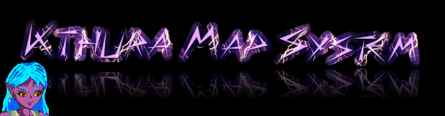

Module tricky_kthura.kthura_save

NOTICE!!!
This module is still in development so many features will not work properly. Or most likely not at all.
I recommend not to use this module until this notice has been removed
This module is written in order to save Kthura maps from BlitzMax.
This module was solely written in order to make creating an editor possibe ;)
The Kthura system was named after the main protagonist of the adventure game Mörker as that was the first game to use this system.
Globals Summary
Functions Summary
Globals
| Global Kthura_GetCam(X Var,Y Var) |
| Description | This function allows you to tell Kthura the camera settings to save. Just create your function and assign it to this variable. |
| Information | This function came to life to allow the editor to save the camera settings, and to also keep this available if alterante editors or a complete new version of the editor from scratch would ever come to be (Though I highly doubt the latter's gonna happen). |
Functions
| Function SaveKthura(KMap:TKthura,url:Object,prefix:String="",SaveBlockMap=True,algorithm$="zlib") |
| Description | Saves the Kthura map. |
| Information | url can be either a filename or a TJCRCreate type. It's up to you if you save the blockmap by default, but it can save time if you do. By default all maps will be packed with "zlib". If you have JCR6 drivers for other compression ratios loaded ("lzma" for example if you got such a driver) you may use that in stead. |
Module Information
| Author | Jeroen P. Broks |
|---|
| Copyright | (c) 2015-2015 Jeroen P. Broks |
|---|
| License | Mozilla Public License 2.0 |
|---|
| Notice | The character 'Kthura' which this system is named after and the world and stories she belongs to are property of Jeroen P. Broks and may only be used with his permission. The name 'Kthura' may freely be used in any system related to the Kthura engine as long as it clearly refers to this system and not to the actual character |
|---|
| Version | 15.07.29 |
|---|
| Quote | How appropriate! You fight like a cow |
|---|